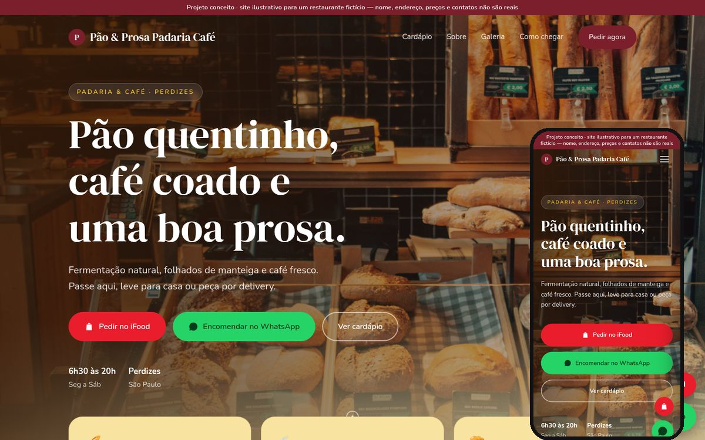
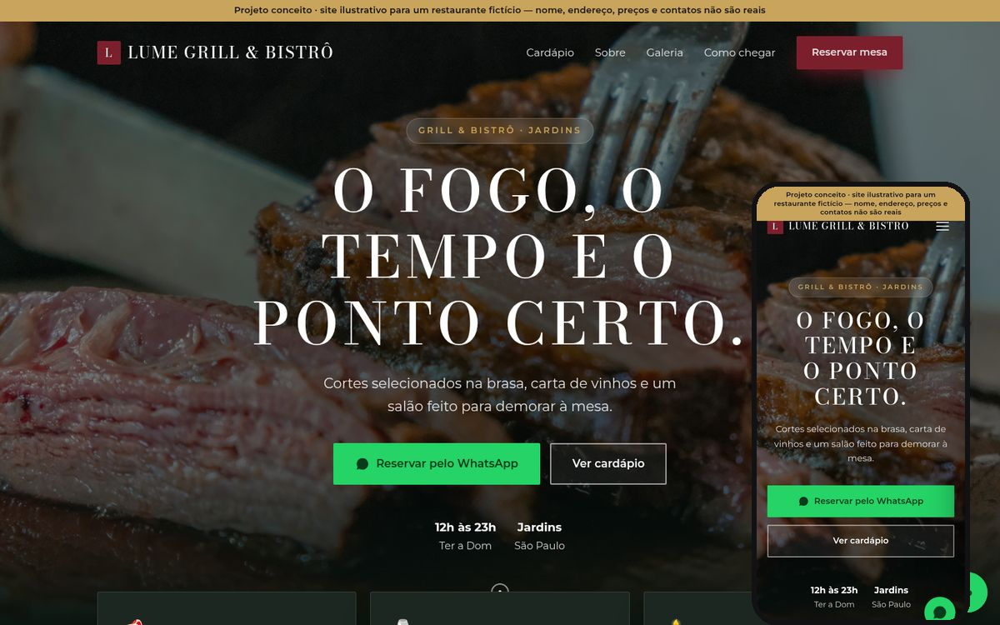

Sites profissionais para restaurantes
Um site bonito, rápido e feito para vender: cardápio claro, botão de WhatsApp e iFood, mapa e visual que passa confiança. Tudo pensado para ajudar o seu restaurante a aumentar as vendas.
Os cinco projetos abaixo são projetos conceito, com restaurantes fictícios.
Projetos conceito
Cinco estilos, cinco tipos de restaurante. Cada site tem identidade visual própria, cardápio, galeria, mapa e botões de pedido. Clique para navegar.
Massa Viva Pizzaria
Visual retrô de letreiro, com creme, vermelho-tomate e verde-manjericão. Cardápio por categorias e pedido por iFood ou WhatsApp.
Bruto Burger Co.
Fundo preto, títulos gigantes em caixa-alta e destaque em amarelo e vermelho. Tom direto e descontraído, feito para dar fome.
Kaori Sushi Bar
Minimalista, com tons de papel, índigo e vermelhão. Tipografia serifada fina, muito respiro e foco na fotografia dos pratos.

Projeto conceitoPão & Prosa Padaria Café
Amarelo-manteiga, bordô e marrom-café, com cantos bem arredondados. Visual acolhedor, ideal para padaria de bairro.

Projeto conceitoLume Grill & Bistrô
Verde-floresta profundo com dourado e títulos em caixa-alta espaçada. Sofisticado, com botão de reserva pelo WhatsApp.
Como funciona
Um processo simples, sem burocracia, para o seu restaurante ter um site profissional no ar.
Demo grátis personalizada
Eu monto uma demonstração com o nome, as cores e o cardápio do seu restaurante, para você ver como fica antes de decidir.
Ajustes
Você me diz o que quer mudar: textos, fotos, itens e botões. Ajustamos até ficar do jeito que você imaginou.
Publicação com domínio
O site vai ao ar com o endereço do seu restaurante na internet, pronto para ser divulgado nas redes e no Google.
Manutenção mensal
Cuido das atualizações de cardápio, preços e horários para o seu site ficar sempre em dia.
Pensado para o cliente pedir mais fácil
Feito para o celular
A maioria dos clientes acessa pelo telefone. Os sites são responsivos e rápidos de abrir.
Pedido em um toque
Botões de WhatsApp e, quando faz sentido, de iFood, sempre visíveis durante a navegação.
Cardápio claro
Categorias, fotos e preços organizados para o cliente decidir rápido e pedir com confiança.
Mapa e horários
Endereço, horário de funcionamento e botão do Google Maps para o cliente chegar sem dúvidas.
Pronto para o Google
Estrutura pensada para buscadores, com título, descrição e dados do restaurante.
Identidade própria
Cores, fontes e tom de voz de acordo com o estilo de cada restaurante, sem cara de modelo pronto.
Quer uma demo para o seu restaurante?
Me chame no Instagram e conte um pouco sobre o seu restaurante. A demonstração é grátis e sem compromisso.